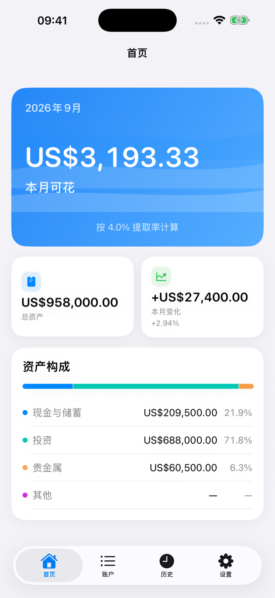
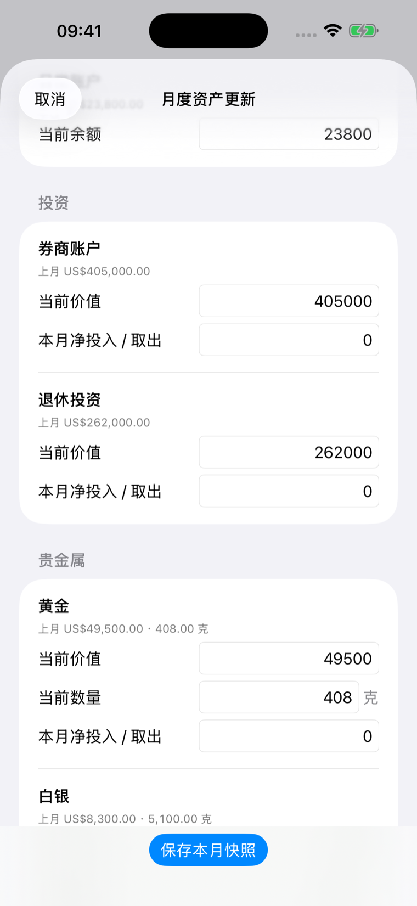
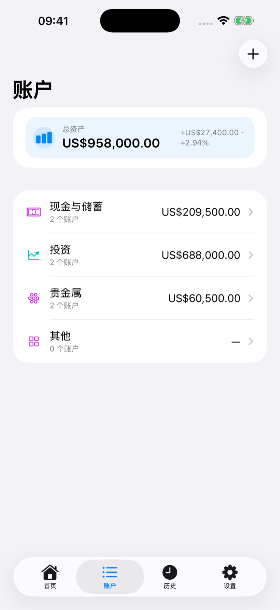
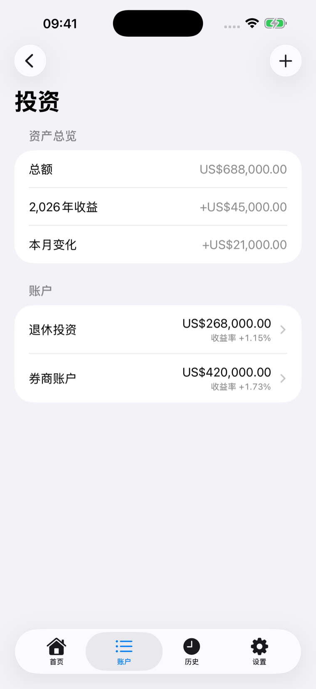
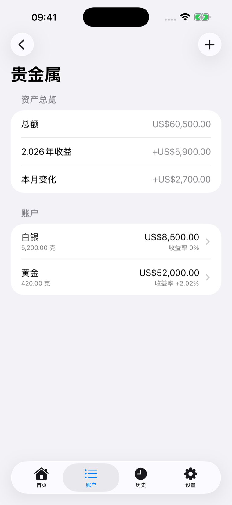
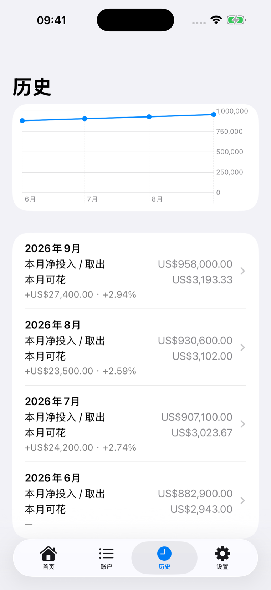

每个月，一个可花数字
用一个清晰数字做规划。
不用每天记账。每月更新一次资产，就能看到这个月可以花多少。
快速月度更新
每月更新一次，很快完成。
上月数据会自动带入。只修改发生变化的数字，再保存一次月度快照。
- 上月数据自动带入
- 净投入会适当默认填写
- 单页完成月度更新
- 日常使用时，一次月度更新通常不到一分钟

整理你的资产
建立一次，反复使用。
现金与储蓄、投资、贵金属和自定义分类。账户结构只需建立一次，之后每个月直接更新数字即可。

投资追踪
区分投入和真正的收益。
记录当前价值和净投入/取出，让资产增加不再被简单当作投资收益。

贵金属
金额和数量一起记录。
黄金、白银等贵金属可以同时记录当前价值和持有数量。

月度历史
留下每个月的资产快照。
查看资产、投入、收益和变化如何随时间演变。

小尺寸主屏幕 Widget
不用打开 App，一眼查看。
一眼查看本月可花金额。
本地优先，隐私优先
无需账户，无需追踪。
无需 FIRE Paycheck 账户不连接银行无广告无追踪不使用自有财务数据服务器
1.1 新增：可选应用锁使用设备提供的身份验证方式保护 App：Face ID、Touch ID 或设备密码，具体方式由 iOS 和当前设备设置决定。
FIRE Paycheck 通过 Apple 的系统身份验证功能请求解锁。App 只接收验证结果，不读取或保存 Face ID、Touch ID 或设备密码数据。
手动备份
需要时再导出备份。
需要换机时，导出备份文件，再在新设备中导入即可。导出位置由系统文件选择器决定，也可以自行选择 iCloud Drive。